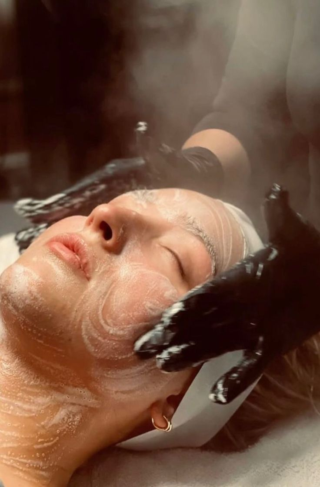
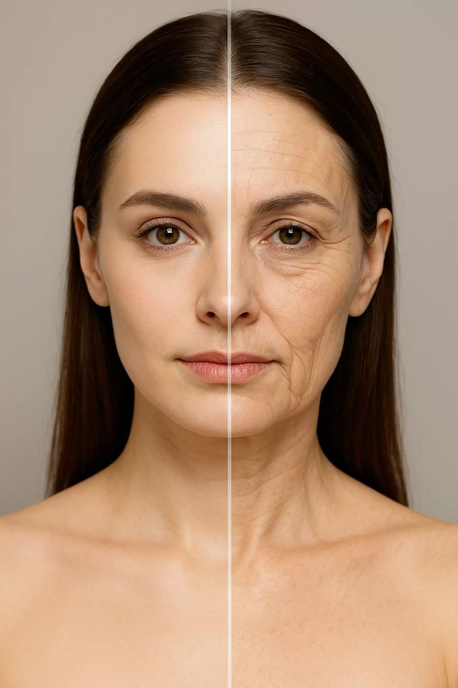
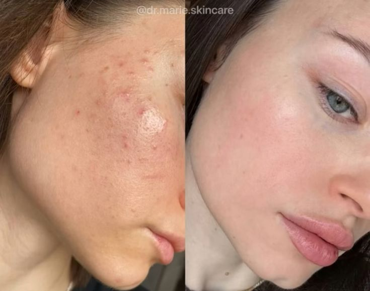

Hizmetlerimiz

Klasik Bakım
Temel temizlik ve ferahlık.

Hydrafacial
Yeni nesil vakumlu temizlik.

Anti-Aging
Gençlik ve canlılık kazandırır.
Sağlıklı, parlak ve yenilenmiş bir cilt için profesyonel dokunuşlar
Cilt tipiniz uzmanlarımızca belirlenir.
Size özel ürünlerle derinlemesine temizlik.
Taptaze ve ışıltılı bir cilt görünümü.

Temel temizlik ve ferahlık.
Yeni nesil vakumlu temizlik.

Gençlik ve canlılık kazandırır.
Bakım öncesi cilt tipinizi belirlemek başarının anahtarıdır.
Parlamaya meyilli, geniş gözenekli. Hydrafacial sizin için en iyisi!
Gergin, nemsiz ve mat. Yoğun nem bakımı ve kolajen desteği gerekir.
T bölgesi yağlı, yanaklar kuru. Dengeli bir klasik bakım idealdir.
